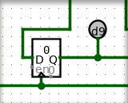

Found in Mouse Tools
Move Tool allows you to select and rearrange existing components and wires.
It behaves similarly to the
 Edit Tool,
except that it can't add new wire segments or directly modify existing wires,
and doesn't have a type-to-search feature for adding new components. It is
mostly useful only for selecting and moving things already in a circuit.
Edit Tool,
except that it can't add new wire segments or directly modify existing wires,
and doesn't have a type-to-search feature for adding new components. It is
mostly useful only for selecting and moving things already in a circuit.

Select items: A plain click on wire or a component, without dragging, will select the component or one wire segment. Holding shift while clicking an item will add it to the selection (or, if it was already selected, remove it from the selection). After selecting items, familiar actions like cut, copy, delete, and duplicate all work. See Edit menu for details.Select area: Click then drag on the background grid to begin a rectangular selection. All components that are fully contained by the rectangle will be selected. Holding shift while making a rectanglar selection will add the new elements to the selection if they were not there already, or will remove them if they were.
Move things: Clicking and dragging a currently-selected component
or wire segment will begin moving everything selected. By default, Logisim will
attempt to fix wires so that existing connections are not lost during the move.
If you're performing a move where you do not want to keep the connections, press
shift during the move and when releasing the mouse
button. If you want to change this behavior, go to Project > Options, select
the Canvas tab, and uncheck the Keep Connections When Moving
box; with
that option unchecked, shift key behavior is reversed:
wires are not reconnected unless the shift key is
held.
Tip: When moving one or more Decorative components, without any other items, the normal snap-to-grid behavior is not enfoced: these components have no wires or ports, so they may be placed anywhere on the canvas. If you want to align them nicely to the grid, hold the shift key while moving them. For all other components, snap-to-grid is required, so shift affects only wire re-connection behavior.
When components are selected, there are several ways to edit them:
When a component is selected, you can edit its attributes in the lower left panel. With multiple components selected, attributes shared by all are shown in that panel. Each attribute shows a value if all components share that same value, or is left blank otherwise. Changing these attributes affects all selected components.
Tip: Many components also respond to hotkeys to change their attributes when they are selected. For example, select one or a few gates, then type a number — this changes the number of inputs for each gate. Or hold Alt or Option and type a number to change the `Bit Width' of their inputs and outputs. See each component's reference page for details on how they respond to hotkeys.
Ghosts or floating selections: When duplicating or pasting components, Logisim does not immediately place the new components into the circuit; instead, the selection will be a collection of "ghosts" hovering above the circuit. These are dropped into the circuit as soon as they are either deselected or dragged to another location.